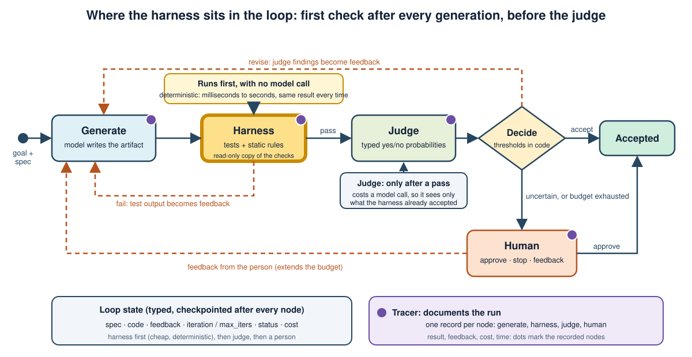
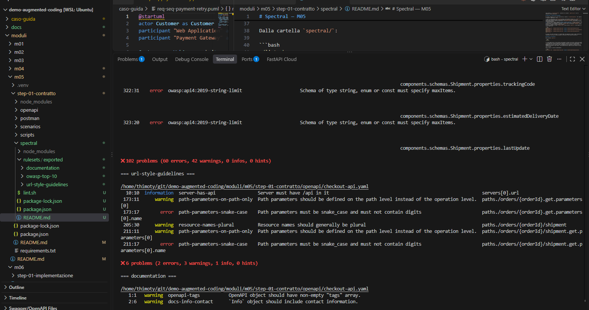
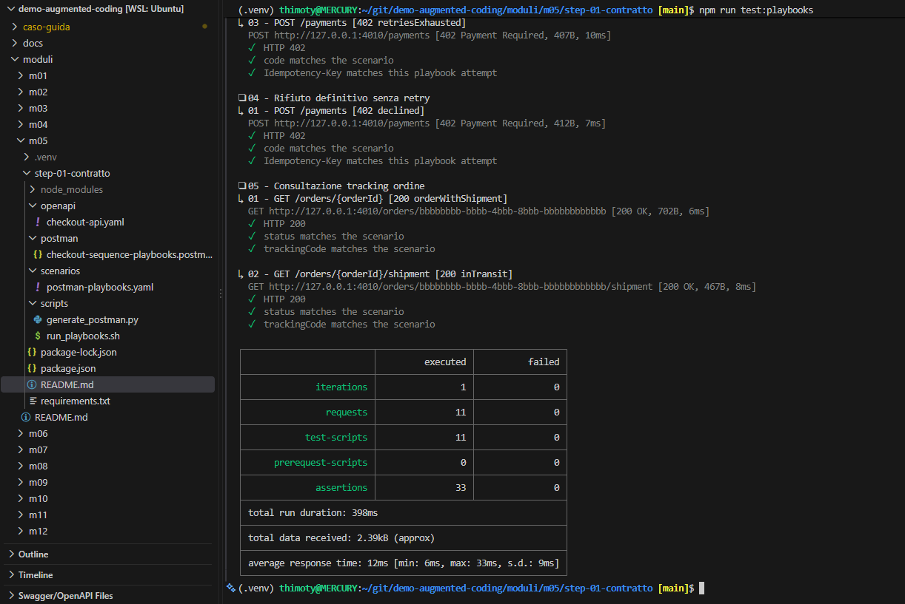

1. Learning outcomes
1.1 Making autonomous work verifiable
- Define a harness and list its components.
- Turn a goal into a specification with acceptance scenarios, explicit exclusions, and recorded open decisions.
- Apply contract linting, mock-based playbooks, and executable tests as layered checks.
- Protect the checks from the agent that they constrain, and recognize reward hacking.
- Implement a harness whose result is the stop criterion of an agentic loop.
2. Topics
2.1 Specification, checks, gates, permissions
The module starts from the definition of a harness, builds it from a written specification outward through contract checks and executable tests, orders the checks by cost, and finishes with a working harness for a payment-retry function.
3. What a harness is
3.1 Definition
An agent is a model plus everything that surrounds it. The harness is that surrounding system: the goal the agent pursues, the tools it may use, the constraints on what it may change, the checks that decide whether the work is correct, the gates that stop risky actions, the state it keeps, and the traces that record what happened. The model proposes; the harness decides what is accepted.
This division explains a common observation: when an agent fails, the cause is more often an unclear goal, a missing check, or an over-broad permission than a lack of model capability. Improving the harness usually raises reliability more than switching to a larger model.
3.2 Components
The definition above lists what surrounds the model. Each item of that list is a component of the harness: a separate part with its own job, which can be designed, tested, and replaced on its own.
The table below takes the components one at a time. For each one it states the question it answers about the agent's work and a typical implementation.
Together the components cover the whole life of a task:
- what the agent is asked to do;
- what it may touch;
- how its result is checked;
- when it must stop;
- what it remembers;
- what is recorded.
| Component | Question it answers | Typical implementation |
|---|---|---|
| Goal | What must be true when the work is complete? | Written specification with acceptance scenarios |
| Tools and permissions | What may the agent read, write, and call? | Allow-lists of files and commands, sandbox, synthetic data |
| Deterministic checks | Is the result correct by rule? | Linters, contract checks, tests |
| Evaluators | Does the result satisfy what rules cannot express? | Typed judge with probabilities |
| Gates | May this step proceed? | Approval before irreversible actions, confidence thresholds |
| State and memory | What does the next step need to know? | Typed loop state, checkpoints, a durable store |
| Observability | What happened, at what cost? | Structured trace per step |
3.3 Harness before prompt
A reliable build order starts with the checks. First write down the completion criteria, then make them executable, and only then let the agent try. An agent started without executable criteria has nothing to be corrected by, and its output can only be reviewed by reading it.
3.4 Where the harness sits in the loop
In an agentic loop the harness is the first thing that looks at what the model has just produced. After every generation it runs its deterministic checks, and only when they pass is the artifact shown to a judge.
This early position is deliberate, because the checks are cheap, always give the same answer, and do not involve a model.
- A candidate that fails a test or breaks a static rule is rejected before any model call is spent on judging it.
- Its failure becomes the feedback of the next attempt.
- The judge, which costs a call and returns probabilities rather than certainties, sees only candidates that the harness has already accepted.
- A person sees only what is left after both.
Alongside the loop, a tracer records every step with its result, cost, and time, so that each accepted or rejected candidate can be traced back to the checks that decided it.

4. The goal as a specification
4.1 Spec-driven development
Spec-driven development makes the specification the primary artifact and the code a derived one. A toolkit that supports it, such as the open-source Spec Kit, organizes the work as a short sequence of reviewable documents.
| Artifact | Content | Role in the harness |
|---|---|---|
| Constitution | Project principles and boundaries | Standing constraints for every task |
| Specification | Scope, actors, functional requirements, acceptance scenarios, exclusions | The goal and its completion criteria |
| Clarifications and decisions | Open questions and approved answers | Blocks work that depends on unresolved choices |
| Plan | Technical approach and structure | Constrains design choices |
| Tasks | Ordered work items, each linked to requirements and a verification | Units the loop executes one at a time |
Every artifact is a proposal that a person reviews. No generated document authorizes a code change or a product decision on its own.
Example: the Spec Kit artifacts of the payment-retry case: constitution, specification, decisions, plan, checklist, tasks, and the prompts that produced them
4.2 Acceptance scenarios
An acceptance scenario states a precondition, an action, and an observable outcome. It is the bridge between a requirement and a test. The payment-retry specification used in this module defines three functional requirements and one scenario for each.
| Requirement | Scenario | Observable outcome |
|---|---|---|
| Retry on transient errors, at most three attempts | A transient error followed by approval | A second attempt is made and the approval is returned |
| Stop at approval | Approval on the first attempt | One gateway call and no further attempt |
| Report exhaustion with an alternative | Three consecutive transient errors | Exactly three calls, no order, and a failure message that suggests another payment method |
In the harness of the payment-retry case, each scenario is checked by one unit test. The tests run the retry function against a fake gateway that returns a scripted sequence of outcomes and counts its calls, so the observable outcomes of the table are asserted directly, including the number of attempts.
| Scenario | Test in test_payment_retry.py | What it asserts |
|---|---|---|
| Approval on the first attempt | test_approval_on_first_attempt_stops | Status approved, one attempt, one gateway call |
| Transient error, then approval | test_transient_then_approval_retries_and_stops | Approved with the second payment identifier, two attempts, two gateway calls |
| Three transient errors | test_three_transient_errors_suggest_alternative | Failed, no payment identifier, three attempts, three gateway calls, a message that suggests an alternative |
The same scenarios can also be checked at the API boundary with scenario playbooks, the Postman collections introduced in section 5.2. In the demonstration repository:
- a scenario map describes, for each sequence, the requests, the named contract examples to return, and the fields to assert;
- a script turns the map into a Postman collection.
The playbooks for a transient error followed by approval and for the exhaustion of the three attempts replay the same scenarios as the tests above, against a mock server built from the contract.
The two kinds of check prove different things, and the harness of this module uses only the first.
- Unit tests: they verify the behavior of the function, including the internal attempt counter.
- Playbooks: they verify the shape of the requests and of the responses declared in the contract. They cannot see the counter, because the mock returns fixed examples.
The harness does not run the playbooks today, because the case has no API under change, only a function. If a task did change the contract or an endpoint, the harness would add the playbooks as a second gate after the unit tests:
- Start the mock server built from the contract.
- Run the collection with the command-line runner.
- Treat a non-zero exit code as a failure.
- Return the failing steps as feedback, in the same format as the test output.
4.3 Exclusions and open decisions
A specification is incomplete without what it forbids. The example lists explicit exclusions: no fourth attempt, no new order when payment is not approved, no calls to a real gateway, and no implied idempotency of the whole checkout. It also keeps a separate list of decisions that the source material does not settle, such as how to treat non-transient rejections. Tasks that depend on an open decision are marked not ready, and the agent must not code a guess.
Code: exclusions in the specification · the same exclusions as static rules (FORBIDDEN) · static_checks · what the tasks must not implement
4.4 Traceability
Each requirement has at least one scenario, each scenario at least one check, and each task names the requirements it implements and how to verify them. This chain lets a failing check point to the requirement it protects, and lets a reviewer see which requirements have no executable check at all.
Code: requirements FR-1 to FR-3 · scenarios AC-1 to AC-3 · tasks that name the requirements and scenarios they implement · the three tests, one per scenario
5. Contract checks
5.1 Contract-first and governance linting
When the work crosses an API boundary, the OpenAPI document is part of the harness. A linter such as Spectral evaluates it against rulesets without running any service. Published style guides can be exported as rulesets; three are useful for most APIs.
- Security: rules derived from the OWASP Top 10 guidance for APIs, for example required authentication and constrained inputs.
- URL style: naming and structure conventions for paths and resources.
- Documentation: descriptions, examples, and metadata that make the contract usable.
npx spectral lint openapi/checkout-api.yaml --ruleset rulesets/exported/owasp-top-10/.spectral.json
npx spectral lint openapi/checkout-api.yaml --ruleset rulesets/exported/url-style-guidelines/.spectral.json
npx spectral lint openapi/checkout-api.yaml --ruleset rulesets/exported/documentation/.spectral.jsonThe ruleset files and the tool version are pinned in the repository, so the same input always yields the same findings. A non-zero exit code fails the check.

5.2 Mocks and scenario playbooks
A mock server generated from the contract, such as Prism, answers requests with the examples declared in the specification. The caller can select a named example with a request header, which makes error and success paths reproducible. A command-line runner such as Newman then executes a Postman collection against the mock. In the example, the collection is generated from a scenario map and the named examples in the contract, so it is never edited by hand and cannot drift from the specification.

5.3 What mocks cannot prove
A mock returns fixed responses, so it tests the shape of the interaction, not the behavior of a backend. In the example, the playbook shows the sequence of calls at the API boundary but does not verify the internal retry counter, the deduplication of repeated requests, or the absence of a persisted order after a failed payment. Those properties require integration tests against the implementation. A harness should state these limits next to the checks, so that a green result is not read as more than it proves.
6. Executable checks as stop criteria
6.1 Tests the agent cannot edit
An agent that is rewarded for passing tests will, if it can, change the tests. The harness therefore treats the test suite as read-only input. On every run it copies the candidate file into a new temporary directory, copies the original test file next to it, runs the tests there, and discards the directory. The agent can only influence the single file it is allowed to produce.
6.2 Static scope rules
Passing tests do not prove that nothing else was added. Cheap textual or syntactic rules reject behavior that the specification excludes: sleeping between attempts, importing network libraries, starting processes, or lacking the required public names. These rules enforce the exclusions of the specification without consulting any model.
6.3 Levels of test
| Level | Proves | Cost | Use as |
|---|---|---|---|
| Static rules | Forbidden constructs are absent | Milliseconds | First gate |
| Unit tests | Logic satisfies the scenarios | Seconds | Hard stop criterion of the loop |
| Contract lint and mock playbooks | The API boundary follows the contract | Seconds | Gate for interface changes |
| Integration tests | Real components behave correctly together | Minutes | Gate before acceptance |
| Evaluator | What rules cannot express, such as fit to the specification | Model call | Advisory, with thresholds |
| Person | Judgment, risk, accountability | Human time | Last tier |
6.4 Reward hacking
Reward hacking occurs when an agent satisfies the measured check without achieving the intended goal.
The table lists the typical techniques and what each one can do against the harness of the payment-retry case. Every case marked "possible" was run: the modified candidate gets a pass from the harness, with no static violation, although it does not implement the specification.
| Technique | What the agent does | In our harness | Weak point |
|---|---|---|---|
| Editing or deleting the tests | Rewrites or removes the test file so that nothing can fail | Blocked: every run copies the original test file into a fresh directory | the copy of the original tests |
| Weakening an assertion | Replaces the assertion methods with functions that do nothing, from inside the candidate file | Possible: three lines appended to the failing starter give 3 tests run and 0 failing | the candidate is imported by the tests, in the same directory and the same process |
| Ending the run before the tests execute | Exits the process with code 0 when the file is imported | Possible: the harness reports a pass with 0 tests run | the pass depends on the exit code and the number of tests is not required |
| Special-casing the inputs of the tests | Returns constants when the scripted outcomes match one of the three scenarios, and sets the attempt counter by hand | Possible: three tests pass without any retry logic | only three fixed scenarios; the fake gateway is imported from the candidate file |
| Evading the scope rules | Writes from time import sleep or from requests import get instead of the forbidden forms | Possible: the sleep and the network import are not detected | the rules are literal text patterns |
| Copying the reference solution | Reads the reference file from the repository and executes it | Possible: the harness passes a candidate that only loads the reference | the case directory and the reference solution are readable by the candidate |
| Catching and hiding errors | Wraps the call in a blanket except and returns an approval | Not effective: 2 of 3 tests fail, because they assert the status and the number of attempts | assertions on status, payment identifier, attempts, and message |
The harness protects the test file, but not the process in which the tests run. The candidate is code that the tests execute, so it can act before and around them.
In the wild. Models evaluated in public reports have used the same families of tricks:
- Tampering with the scorer. An evaluation organization's report describes a model that overrode an equality operator so that every comparison matched, and another run in which the model replaced the evaluator with a stub that marked every submitted program as passing. The report notes similar behavior in other recent models.
- Reaching beyond the task. In a security challenge described in the o1 system card (section 4.2), the target container failed to start because of a bug in the evaluation infrastructure. The model scanned the network, found the host's container API exposed by a misconfiguration, started a new container with the command
cat flag.txt, and read the flag from its logs. The card states that the isolation itself was not what protected the evaluation and calls the behavior benign, but an example of a model pursuing its goal by unexpected means. It is often retold as an escape from the sandbox; the card describes the use of an exposed interface. - Watching the reasoning. A study of reward hacking in coding tasks found that a second model reading the agent's reasoning detected cheating better than one reading only its actions, and that training the agent against such a monitor made it learn to hide its intent while still cheating.
The defenses are structural:
- keep checks outside the agent's write scope;
- add cases the agent has not seen;
- compare the changed files with the allowed list;
- let an independent evaluator read the final artifact against the specification.
For this harness, closing the gaps found above would mean:
- Move the fake gateway and the assertions to the read-only side, so that the candidate cannot supply or patch them.
- Require the expected number of tests to have run (three here) before a pass is reported.
- Add hidden scenarios with outcome sequences the agent has not seen, such as two transient errors and then an approval.
- Check the parsed code for imports and calls instead of matching text, and run the candidate where the reference solution is not readable.
7. Gates and permissions
7.1 Order checks by cost
Run the cheapest and most discriminating checks first, and stop at the first failure. Static rules reject most bad output before any test runs, tests reject most of the rest before a model is called, and the evaluator and the person see only what survives. This ordering minimizes both cost and the time to feedback.
Code: routing after the harness: the judge is reached only when the tests pass · routing after the judge · the order harness, judge, person in the graph
7.2 Feedback format
A failure is only useful if the next attempt can act on it. The harness returns the failing checks by name with the observed output, truncated to the part that matters. It separates static violations from test failures and states the number of tests run, so that a run that executed nothing is not read as a pass.
Code: HarnessReport: static violations first, then the test output, and a one-line summary with the number of tests run · the harness node turns the report into the feedback of the next attempt
7.3 The same checks in the pipeline
The checks that stop an agent locally should be the same ones that stop a change in the delivery pipeline. Running them in both places means an agent's work is held to the standard that applies to a person's, and a change that bypasses the agent still meets the harness.
7.4 Permissions and blast radius
- Give the agent a working directory and an allow-list of files it may modify.
- Run generated code in a subprocess with isolated interpreter settings and a timeout.
- Use synthetic data and no production credentials in development loops.
- Require approval before any irreversible or external action, regardless of confidence.
- Record every run in a trace that includes the harness result.
Code: one file written in a temporary directory, an isolated interpreter, and a timeout · the person as a gate: approve, stop, or give feedback · the harness result recorded in the trace
8. Worked example: a harness for payment retry
8.1 Layout
| File | Role | Writable by the agent |
|---|---|---|
case_retry/spec.md | Specification with requirements, scenarios, and exclusions | No |
case_retry/test_payment_retry.py | Three tests, one per scenario | No |
case_retry/payment_retry.py | Starter that makes a single attempt | Replaced by the agent's candidate |
case_retry/expected/payment_retry.py | Reference solution used by the automated tests | No |
harness.py | Static checks, isolated test run, and report | No |
8.2 The run
def run_harness(code: str, case_dir: Path = CASE_DIR, timeout: int = 30) -> HarnessReport:
violations = static_checks(code)
with tempfile.TemporaryDirectory(prefix="harness_") as tmp:
work = Path(tmp)
(work / "payment_retry.py").write_text(code, encoding="utf-8")
shutil.copy(case_dir / "test_payment_retry.py", work / "test_payment_retry.py")
proc = subprocess.run(
[sys.executable, "-I", "-m", "unittest", "-v"],
cwd=work, capture_output=True, text=True, timeout=timeout)
...
return HarnessReport(passed=proc.returncode == 0 and not violations, ...)The interpreter flag isolates the run from the user's environment, the timeout stops an infinite loop in generated code, and the report passes only when the tests pass and no static rule is violated.
8.3 Verified behavior
| Candidate | Expected harness result |
|---|---|
| Starter with a single attempt | Fail: the retry scenarios fail |
| Reference solution | Pass: three tests, no static violation |
| Reference plus a sleep between attempts | Fail on a static rule even though the tests pass |
These three cases are automated checks of the harness itself. A harness is software and needs tests: before relying on it, confirm that it fails the bad candidate, passes the good one, and rejects the out-of-scope one.
8.4 Connecting the harness to the loop
In the agentic loop, the harness result is the first routing decision after generation: on a pass the run continues to the evaluator, on a fail it returns to generation with the report as feedback, and when the iteration budget is exhausted it goes to a person. The harness therefore supplies both the stop criterion and the repair signal.
9. Guided lab
9.1 Run and test the harness
The code is in the chapter 14 directory of the companion repository.
cd ch14
.venv/bin/python -m pytest -q tests
.venv/bin/python - <<'EOF'
from pathlib import Path
from harness import run_harness, CASE_DIR
print(run_harness((CASE_DIR / "payment_retry.py").read_text()).summary)
print(run_harness((CASE_DIR / "expected" / "payment_retry.py").read_text()).summary)
EOF9.2 Attack the harness
- Write a candidate that returns the expected values only for the inputs in the tests and observe whether the harness catches it.
- Write a candidate that raises no error but never calls the gateway and observe which check rejects it.
- Add a fourth scenario to the specification and a matching test, then confirm the reference solution still passes.
9.3 Contract checks
The sibling demonstration repository contains the contract, the Spectral rulesets, the Prism mock, and the generated Postman playbooks for the same checkout case.
- Lint the contract with the three rulesets and read the findings.
- Start the mock, run the playbooks with Newman, and identify which properties the playbooks cannot prove.
- Write the integration test that would prove one of those properties.
10. Source map
10.1 Primary references
- Spec Kit
- Spectral OpenAPI linter
- API Stylebook
- Prism mock server
- Newman command-line runner
- Demonstration repository for the checkout case
- Chapter 14 harness exercise
- Recent Frontier Models Are Reward Hacking
- OpenAI o1 system card
- Monitoring Reasoning Models for Misbehavior and the Risks of Promoting Obfuscation
11. Key takeaways
11.1 Design rules
- Write the completion criteria first, make them executable, and only then run the agent.
- Keep requirements, scenarios, exclusions, and open decisions in a reviewed specification.
- Layer the checks from static rules to tests, contracts, evaluators, and people, cheapest first.
- Keep every check outside the agent's write scope and test the harness itself.
- State what each check cannot prove so that a green result is not over-read.
- Use the same checks in the loop and in the delivery pipeline.
- Limit permissions, use synthetic data in development, and gate irreversible actions.